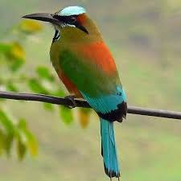
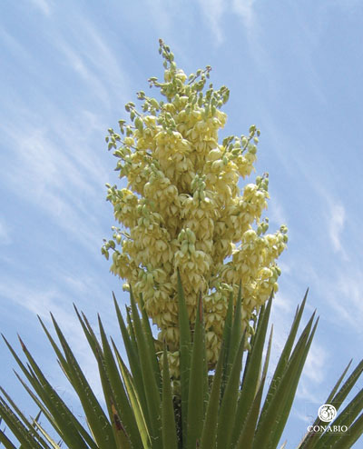
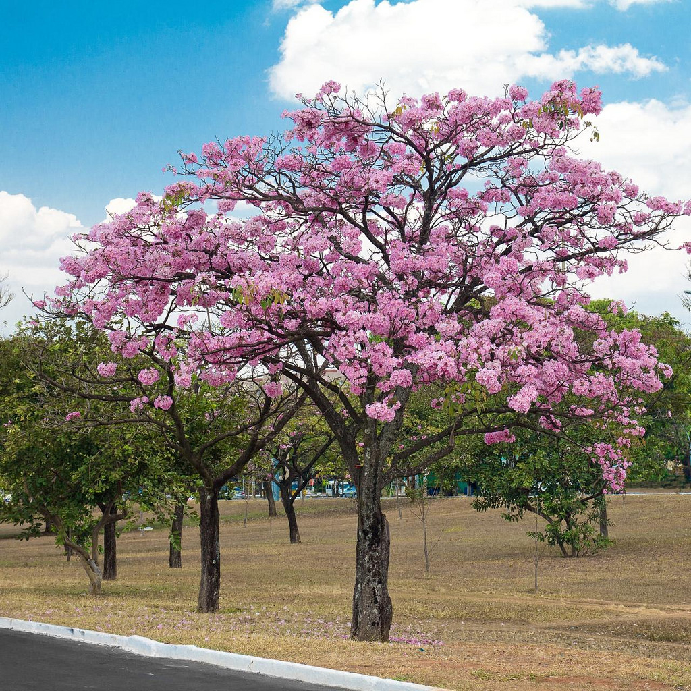
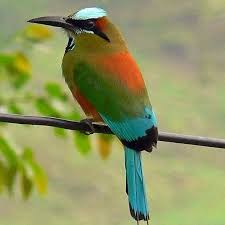
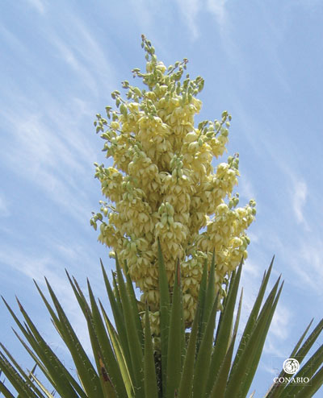
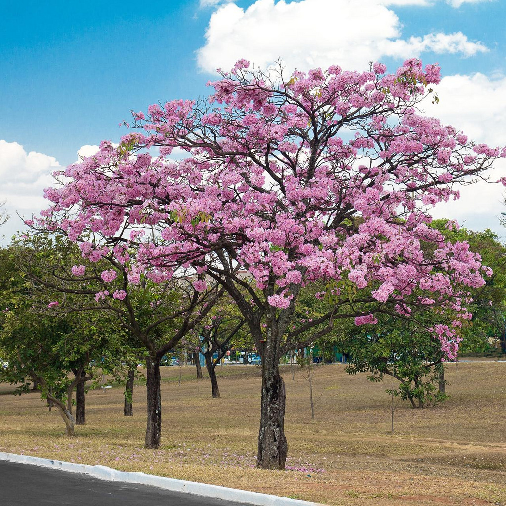

Simbolos patrios
Ave nacional: Torogoz
Flor nacional: Flor de izote
Escudo nacional

Arbol nacional: Maquilishuat
En 1520 la población indígena del territorio se redujo en un 50% debido a una epidemia de viruela que afectó a toda el área mesoamericana. El 31 de mayo de 1522 el español Andrés Niño, a la cabeza de una expedición, desembarcó en la isla de Meanguera en el (golfo de Fonseca); y posteriormente descubrió la bahía de Jiquilisco y la desembocadura del río Lempa. Descubriendo de esta manera el territorio salvadoreño.
De fines de febrero a principios de junio de 1524 conquistó a los quichés, cakchiqueles, tzutuhiles, pipiles de Escuinta y xincas de Guazacapein y ante su espíritu vívido de aventura, gloria y riqueza, se mostró una poderosa nación india: La nación pipil.
El cacique Atlacatl y sus bravos soldados estaban dispuestos a triunfar o morir. Alvarado les envió mensajeros, pidiéndoles que retornaran a la ciudad y rindieran el vasallaje; pero el jefe indio contestó: “Si queréis nuestras armas venid a llevarlas a las montañas”.
En efecto: Tonatiuh confiesa asi su derrota en la capital de los pipiles:”Sobre estos indios de Cuzcatlán, que estuve diecisiete dias, que nunca por entradas que mandé hacer, ni por mensajeros que les hice, como he dicho, los pude atraer, por la mucha espesura de los montes y grandes sierras y quebradas y otras muchas fuerzas que tenian”.
Alvarado, cuyo firme propósito era pasar en Cuzcatlán la estación de las lluvias y cuya herida en Acajutla lo ratificaba en ese propósito, salió huyendo de la metrópoli de los pipiles el 4 de julio de 1524. En la primera confrontación histórica Cuzcatlan había triunfado sobre España.
El Primer movimiento independentista en San Salvador de 1811, conocido como el Primer Grito de Independencia de Centroamérica, fue una sublevación en contra de las autoridades de la Capitanía General de Guatemala. A finales del siglo XVIII, la Intendencia de San Salvador se había mantenido como la principal productora de añil en la región, pero el monopolio comercial impuesto por las casas comerciales guatemaltecas, junto a la crisis económica y política que sobrevino a las colonias americanas del Imperio español a inicios del siglo XIX, motivó a los pobladores de la ciudad de San Salvador para lograr un gobierno autónomo.
El 5 de noviembre de 1811 los salvadoreños fueron liderados por un grupo de criollos encabezados por Manuel José Arce, y los sacerdotes José Matías Delgado junto a los hermanos Aguilar. Los alzados lograron deponer a las autoridades coloniales y nombrar a sus propios dirigentes, pero la revuelta no encontró respaldo en los demás poblados de la intendencia, por lo que la ciudad quedó aislada. Las autoridades de la Capitanía General de Guatemala enviaron una misión de índole pacífica para restaurar el orden en la localidad. Este movimiento fue también el primer intento de sublevación en la capitanía, previo a la Independencia de Centroamérica en 1821.
Ave nacional: Torogoz
Flor nacional: Flor de izote
Escudo nacional
Arbol nacional: Maquilishuat
El salvador es un país soberano de América Central ubicado en el litoral del océano Pacífico con una extensión territorial de 21 041 km²
Ahuachapán
Cabañas
Chalatenango
Cuscatlán
La Libertad
La Paz
La Unión
Morazán
San Miguel,
San Salvador(Capital)
San vicente
Usulutan
Sonsonate
Santa Ana
Suchitoto

Lago de coatepeque

Catedral de santa ana

Ataco